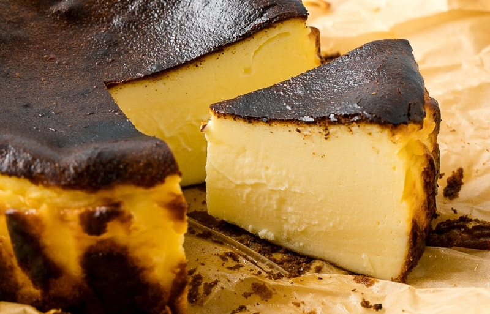

Burnt Basque Cheesecake

Ever since I learned of its existence, I have been so interested to cheesecakes.
Blueberry, Biscoff, even the no bake kinds, I want them all. The only issue I have
with cheesecakes is that they are pricey as hell, specially the
ones with extra toppings and flavors.
So, why not just elevate the classic cheesecake? Maybe turning up the heat and
burning it a little? Luckily, we have this thing called the Burnt Basque
Cheesecake, which is a cheesecake that is baked at a high temperature,
resulting in a burnt top and a creamy inside. I can't think of anything else to add
here so let's just get to it now.
Ingredients
- 500g cream cheese
- 1/3 cup sugar (add more according to your taste)
- pinch of salt
- 1tspn vanilla extract
- 2 large eggs
- 200g all-purpose cream
- 1tbsp cornstarch
Instructions
- Preheat your oven to 200°C (400°F).
- Line a 9-inch round cake pan with parchment paper, ensuring the paper extends above the rim.
- In a large bowl, beat the cream cheese until smooth.
- Add sugar, salt, and vanilla extract, mixing until well combined.
- Beat in the eggs one at a time, ensuring each is fully incorporated before adding the next.
- Stir in the all-purpose cream and cornstarch until smooth.
- Pour the batter into the prepared pan.
- Bake for about 25-30 minutes or until the top is deeply browned and the center is still slightly jiggly.
- Let it cool at room temperature before refrigerating for at least 4 hours or overnight.
- Serve chilled or at room temperature. Enjoy!
Home